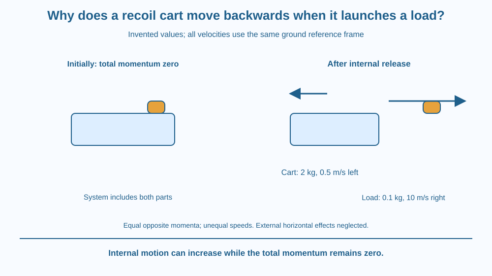

Use momentum conservation to explain recoil in a cart-and-load model. Define the system and reference frame, track opposite directions and distinguish internal energy release from an external momentum input. Keep the exercise entirely on paper rather than launching objects.
A cart initially at rest releases a load toward the right. The cart moves left. The mechanism did not need to push on an invisible wall behind it. The two parts exchanged momentum through their internal interaction.
Why are their speeds not necessarily equal? Momentum includes mass, so a heavy cart can balance a lighter load's momentum with a smaller speed in the opposite direction.
The useful explanation follows the combined system before and after release, not just the object that looks most dramatic in the picture.
A system is the set of objects included in the accounting. Here it contains the cart, load and release mechanism. The example assumes horizontal external effects are negligible during the short release interval.
Under that condition, total horizontal momentum is conserved. Internal forces exchange momentum between parts but do not supply a net external impulse to the complete chosen system. We take the momentum definition from the earlier lesson as background.
If the system starts at rest, its initial total horizontal momentum is zero. After release, the cart and load momenta must add to zero in the ideal model. Their directions are opposite.
For invented values, a two-kilogram cart recoils while a 0.1-kilogram load moves right at ten metres per second relative to the ground. The load momentum is one kilogram metre per second right. The cart therefore has the same magnitude left, giving a speed of 0.5 metres per second left.
The velocities must use a common reference frame. A load speed measured relative to the moving cart is not automatically the same as its ground-frame speed. Mixing those descriptions can give an incorrect calculation even when the conservation idea is correct.
The release mechanism supplies energy, perhaps from a stored-energy element in the conceptual model. Momentum conservation does not mean motion appears without an energy source. Energy and momentum are different accounting quantities.
Real wheels, friction and contact with surroundings can provide external effects. If those matter over the chosen interval, the simple two-part equation needs a broader system or additional terms. State the idealisation rather than claiming every real cart follows the example exactly.
Recoil is not a rule that every pair moves at equal speed. Equal and opposite momentum can involve different masses and speeds. Nor does it require a firearm or explosive demonstration; the principle can be understood completely from a safe abstract model.
Draw one boundary around cart and load. Before release, put zero total momentum under the whole boundary. After release, draw opposite arrows on the two parts and label their mass-times-velocity products.
Make the momentum arrows equal in magnitude while allowing the velocity arrows to have different lengths. This distinction prevents the common mistake of representing equal momentum as equal speed automatically.
Add a stored-energy symbol inside the boundary and an external-friction arrow outside it. The first supports motion without changing the system's initial total momentum; the second identifies a condition that can invalidate the simplest isolated horizontal model.
The SVG compares the initially stationary combined system with two oppositely moving parts after release. The invented masses and ground-frame velocities are clearly labelled.
A system boundary surrounds both parts, and a separate note states negligible external horizontal effects during release. Equal momentum magnitudes appear alongside unequal velocity magnitudes.
No launching apparatus is specified. The graphic is a conservation calculation, not an instruction to propel a toy, build a spring device or test recoil with a dangerous object.

Recoil-like motion appears in several mechanical systems when one part is set moving relative to another. Understanding it requires identifying which objects exchange momentum and which external interactions remain relevant.
A classroom trolley model can be analysed on paper without assuming that its wheels remove all friction. The ideal short-interval condition is part of the reasoning, not an automatic property of anything called a trolley.
This lesson avoids firearms, pressure vessels and improvised launchers. Their risks and practical details are unnecessary for the principle. A signed equation and a clear system boundary provide the specific science safely.
Use paper, a pencil and a calculator if desired.
Write ground-frame velocities and idealised external effects beside the equation. Do not build or release a physical device. The model calculation teaches conservation more clearly than an uncontrolled launch with unknown friction and no measured reference frame.
If the load mass stays fixed but the cart becomes heavier, what happens to cart speed for the same ground-frame load momentum? Use the product relation rather than saying the heavier cart cannot move at all.
Now imagine the cart pressed against a wall during release. Which external interaction changes the system accounting? A recoil prediction depends on the boundary and conditions, not only on the word release.
Which condition supports the simple recoil calculation?
Answer: A — The chosen system conserves horizontal momentum when the relevant external effect is negligible.
Why can a heavier cart recoil more slowly than its load moves?
Answer: C — A larger mass needs less speed for a specified momentum magnitude.
Invented cart mass is 2 kg and its required momentum is 1 kg m/s left. What is its velocity?
Answer: B — Dividing the leftward momentum by 2 kilograms gives 0.5 metres per second left.
Create a signed before-and-after momentum table for a fictional release. Include masses, velocities in one reference frame and total momentum. State the energy source separately.
Add one external condition that would require revising the model. Your explanation should make it clear why opposite directions do not imply equal speeds and why conservation does not mean a machine creates energy from nothing.
A system can acquire internal motion while its total momentum stays zero. Zero total momentum does not mean every part remains motionless. Opposite contributions can cancel in the sum, which is why looking only at one moving component misses the conservation relationship.
With negligible external horizontal effects, a resting cart-load system develops equal and opposite momenta during release, while different masses can have different recoil speeds.